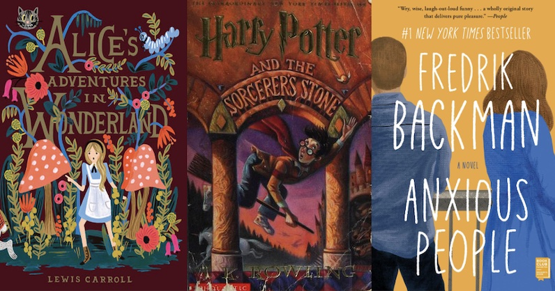

How Would You Identify Your Neutrality?
There are some days when we just need to exist in a place between sheer happiness and sadness. We are complex beings that feel many emotions, but some days are just for living without the pressure of existing within a specific emotion. How do those neutral emotions feel for you today?
Book Recommendations Based On Your Specific Mood
| Specific Moods | Book Recommendations | Summary | Price |
|---|---|---|---|
| Balanced | Alice's Adventures in Wonderland by Lewis Carroll | Alice falls into Wonderland, meeting bizarre creatures and navigating surreal challenges. A whimsical tale exploring identity, growth, and the wonders of imagination. | $18.95 |
| Harry Potter and The Sorcerer's Stone by J.K. Rowling | Harry Potter discovers he's a wizard and enters Hogwarts School of Witchcraft and Wizardry. An enchanting journey filled with magic, friendship, and the search for the Sorcerer's Stone, which grants immortality. | $22.95 | |
| Detached | Anxious People by Fredrik Backman | Fredrik Backman's 'Anxious People' weaves a heartwarming tale of a botched bank robbery turned hostage situation. A poignant exploration of human connection, love, and coping with life's anxieties. | $17.95 |
TV Series Recommendation: Schitt's Creek (2014)
Created by: Eugene Levy and Daniel Levy